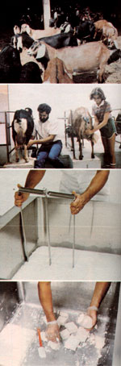

The family has built up a herd of some 40 registered Nubians... Jerry, with the assistance of his daughter Jessica, hand milks about 20 does twice a day... The raw milk is heated, rennet and cultures are added, and the curd is cut into smaller particles... The finished feta is packed into glass jars, then aged for 60 days.